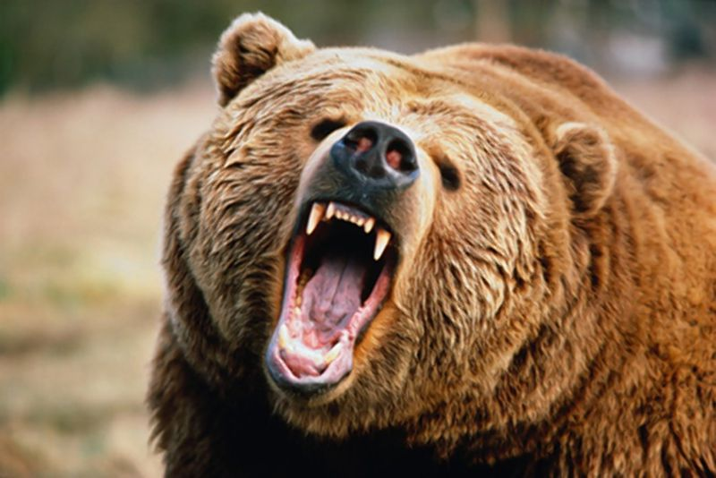
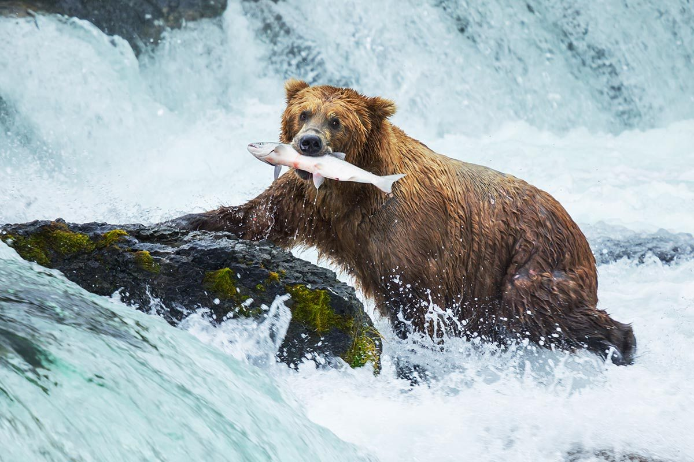
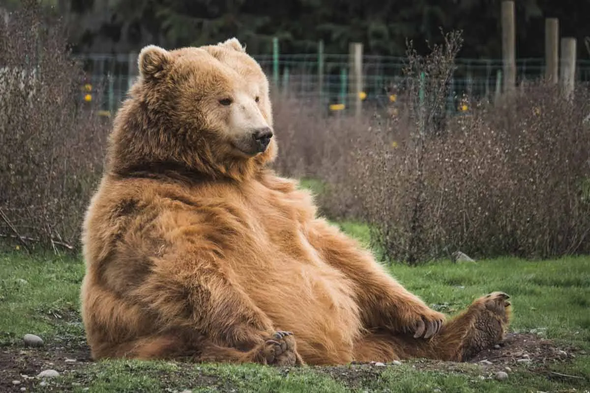
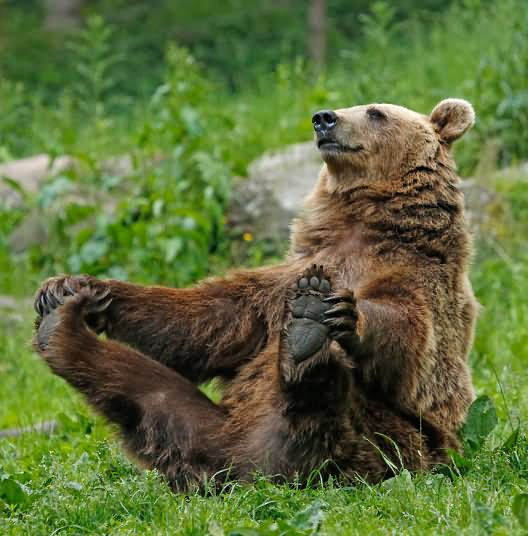
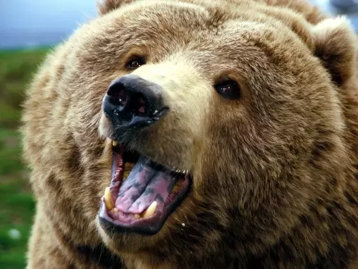
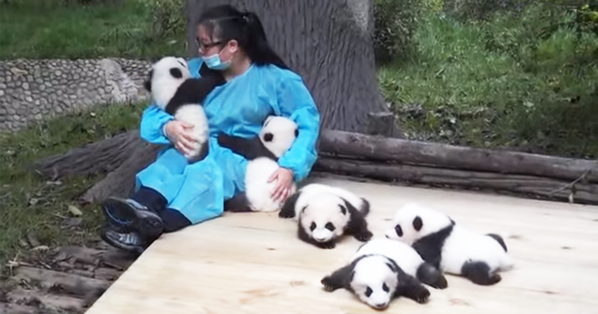
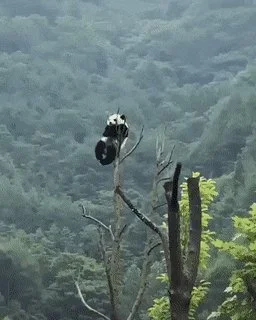
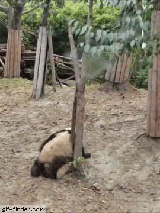

Let Me Present: Bears!
Bears are pretty weird. Because when you think of bears, you imagine them as these fierce and dangerous creatures.
They're majestic beasts and can easily kill you without trying.



But they also do this...



I love how they can be the most dangerous animal on land, but can also act cute and cuddly.
When I see pictures of them. I only want to give them a big BIG hug. Why dangerous, if bear cute? :3

Anyway, I'm going to show a couple of bears that I think are worth mentioning.
1. Pandas
I really love how the media loves to portray pandas as strong bears that can do martial arts.
But it can't be further from the truth.
Even though pandas can potentially kill you, pandas can't survive in the wild anymore. They're very vulnerable animals
and most can only live in captivity now. Because of this, there's now a profession which requires you to take care of pandas, hang
out and cuddle with them. Not gonna lie, it probably the best job a person can have.

Pandas are now considered vulnerable since there are less than 1,900 pandas live in their natural habitat. I sometimes
like to think one of the reasons why they are that way because of how frequent they would get themselves into danger.
They would get into these unfortunate positions that they put themselves into. Like, look"

Why would it put itself in danger like that :v

They're really adorable though :3
Silly old bears :3 In my opinion, pandas are pretty great bears. They're the treasure of my heart.